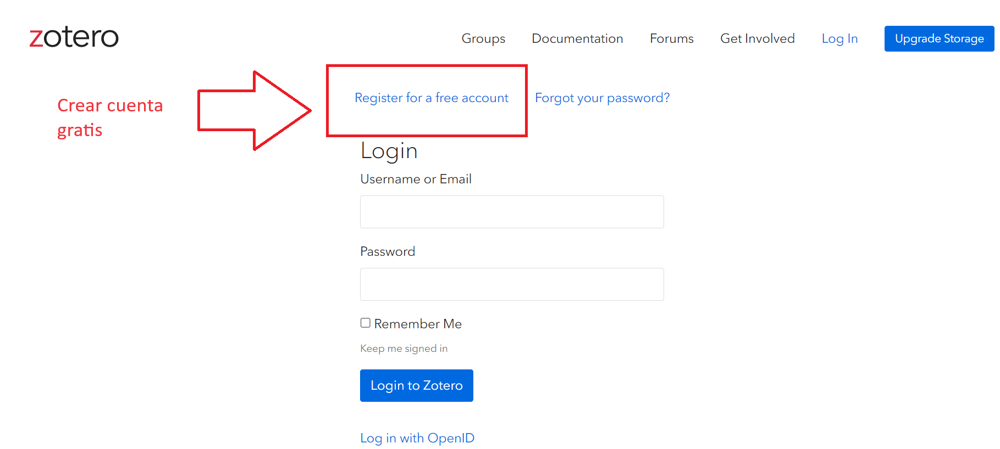
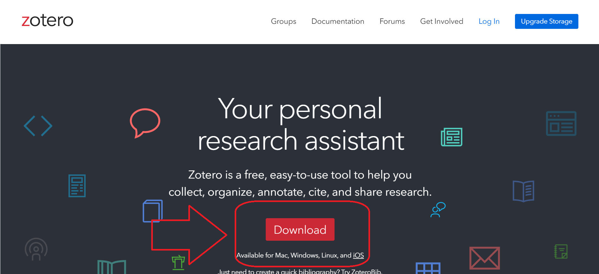
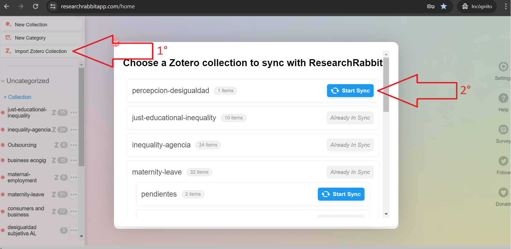
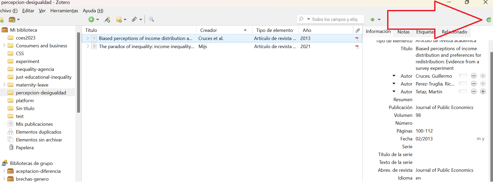
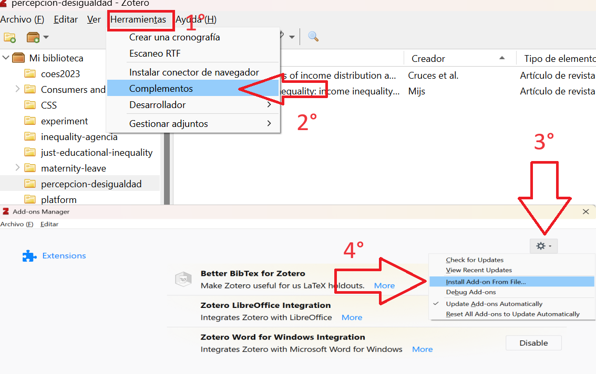

Práctico R 2. Vinculación R y Zotero
Presentación
Zotero
- Acceder a la página de zotero
Vamos a Log in
- Y creamos una cuenta gratis

- Finalmente volvemos al inicio y descargamos el programa:

Veamos cómo se ve zotero

Zotero es un gestor bibliográfico que nos permite almacenar referencias bibliográficas.
Es posible crear distintas bibliotecas personales (esquina superior izquierda) o grupales (abajo). Se recomienda separar las bibliotecas por temas o proyectos
Al visualizar una referencia bibliográfica nos muestra todos los metadatos: Título, autores, nombre de la revista, año de publicación, DOI, ISBN de la revista, número de páginas, etc.
El dato central que nos va a servir en esta parte del proceso es el DOI
DOI: Digital Object Identifier (Identificador de objetos digitales)
El DOI consiste en un código alfanumérico que identifica en la web un artículo y que lo recupera incluso si éste se ubica en un servidor distinto al que fue alojado en un principio. Se evita así el típico problema de los enlaces rotos, muy habitual en macrowebs como las universitarias.

- Para crear una biblioteca en zotero vamos a Archivo -> Nueva colección y le ponemos un nombre que no tenga tíldes, ñ o espacios

En este caso mi biblioteca se llama “percepcion-desigualdad”.
Zotero tiene dos funciones para agregar referencias botón verde “Nuevo elemento” o varita mágica “añadir elemento por identificador”. Esta vez vamos por la segunda opción
Buscamos un paper que nos interese: en este caso busqué el paper The paradox of inequality: income inequality and belief in meritocracy go hand in hand de Jonathan Mijs (2021). Su DOI es https://doi.org/10.1093/ser/mwy051
Usamos la función Añadir elemento por identificador para agregar nuestra referencia a zotero

¿Cuál es la forma más eficiente de buscar bibliografía sobre un mismo tema?
Researchrabbit
Research Rabbit es una plataforma que a partir de un paper busca otros similares, cruzando referencias y autores. Además, tiene una ventaja: Se vincula con Zotero
Ingresar a la página https://researchrabbitapp.com/.
Crear cuenta

- Una vez dentro apretamos “Import Zotero Collection” y seleccionamos nuestra biblioteca

- Así se ve research rabbit

- Podemos revisar el abstract de algún paper y, si nos interesa, lo agregamos a nuestra biblioteca

- Después volvemos a Zotero, actualizamos y aparece nuestro nuevo paper

Ahora solo nos interesa lograr una cosa más: vincular nuestra biblioteca de Zotero con R
Vamos a este link y descargamos zotero-better-bibtex-6.7.169.xpi
Volvemos a Zotero –> Herramientas –> Complementos –> La tuerca en la esquina superior derecha –> Instalar Add-on desde archivo –> Seleccionamos el archivo que acabamos de descargar

- Paso final: exportamos nuestra biblioteca. Click derecho en nuestra biblioteca –> Exportar colección

- Seleccionamos formato: Better BibTeX y marcamos la casilla “Keep updated”. Esto último actualizará el archivo automáticamente cuando agreguemos nueva bibliografía

- Guardamos nuestro archivo .bib en la misma carpeta de nuestro proyecto de trabajo
Quarto
La escritura en Quarto tiene algunos códigos o funciones, aquí un resumen de su mayoría:
| Código | Así se ve |
|---|---|
|
Algo de texto. Algo de texto en el párrafo. Siempre utilizando espacios para dividir párrafos |
`*Cursivas*` |
Cursivas |
`**Negrita**` |
Negrita |
# Título 1 |
Título 1 |
## Título 2 |
Título 2 |
### Título 3 |
Título 3 |
(puedes llegar hasta un título N° 6 con ######) |
|
`[Texto enlace](https://quarto.org/)` |
Texto enlace |
`` |
|
> Citas |
|
|
|
|
|

Abrimos nuestro Rproject y creamos un nuevo documento de Quarto file –> new file –> Quarto document
Editamos el yaml, agregando bibliography: percepcion-desigualdad.bib y link-citations: yes
YAML: Lenguaje de programación. Es un formato de serialización de datos que proporcionan un mecanismo de intercambio de datos legible por humanos. Dan formato a los datos de manera estandarizada para su intercambio entre aplicaciones de software.

Comenzamos a escribir la introducción de nuestra investigación
Para insertar referencias:
Se pueden insertar citas usando el comando Insert -> Citation o usando la sintaxis directamente (por ejemplo, (cita?) o (cita?)).
Las citas van entre corchetes y están separadas por punto y coma. Cada cita debe tener una clave, compuesta por ‘@’ + el identificador de la cita en zotero.

En este caso, [@mijsParadoxInequalityIncome2021a]
Aquí hay otros ejemplos:
La investigación sobre percepción de desigualdad económica ha tenido un auge durante los últimos años [ver @mijsParadoxInequalityIncome2021a; también @crucesBiasedPerceptionsIncome2013].
Específicamente, se ha encontrado evidencia sobre que… [@mijsParadoxInequalityIncome2021a]. De todas formas, @crucesBiasedPerceptionsIncome2013 plantea que…
Así mismo, Mijs señala que… [-@mijsParadoxInequalityIncome2021a]
Aunque ambos concluyen que… [@mijsParadoxInequalityIncome2021a; @crucesBiasedPerceptionsIncome2013]

- Luego renderizamos y se debería ver así:

Con referencias automáticas!
- Ahora que tenemos la introducción de nuestra investigación podemos subirla a Github Pages a través de Github Desktop.